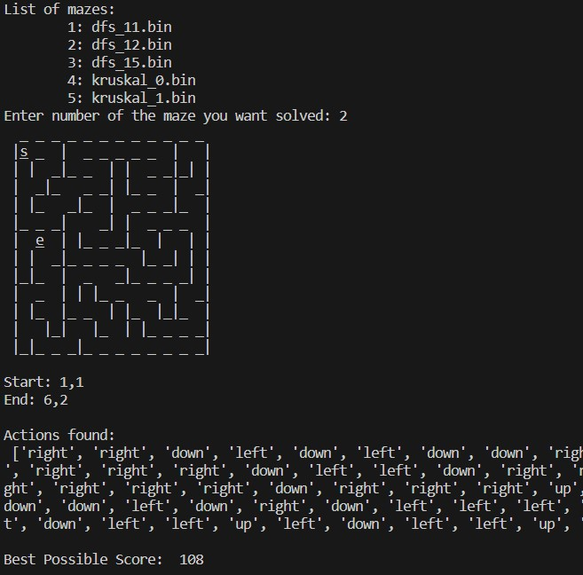
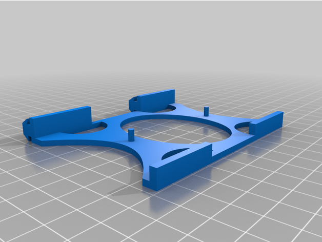

Like many of my peers, I have a handful of lab-assigned and personal coding projects. My new GitHub is not currently hosting many publicly available projects, but that will change in the coming months.
Maze Maker (Git Release v1.0.0) - Command line Python program that generates playable Mazes stored in efficient binary files. The project currently implements either Kruskal's or DFS (user's choice) for the maze generation. There is an Algorithm that finds the most efficient path through the maze by implementing an A* Search. The link contains documentation regarding use of the project.
RaspberryPi 4 - I have moderate skill with RaspBerry Pi. This is largely due to a gravitation towards technical projects that immediately improve or solve a small issue in my day to day. This past year my RasPi has been incarnated as a(n):
3D Printing and Thingiverse - Speaking of 3D Printing, my skills are not limited to coding. I designed a handful of my own models in SolidWorks. Each of these required quite a bit of prototyping, precision measurements, and sketching. The few designs I have shared publicly have garnered hundreds of views and approximately 20% download rate in total.
